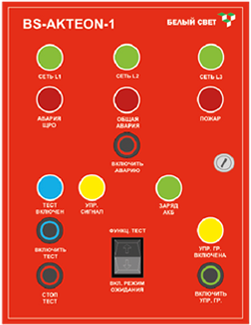

- групповой режим ожидания световых приборов;
- общий режим ожидания;
- изменение типа действия светового прибора (постоянный/непостоянный) для световых приборов
универсального типа; - групповое тестирование световых приборов;
- ручной и автоматический перевод системы аварийного освещения в аварийный режим.
Техническое решение №1
Автономная система аварийного освещения
с функцией TELECONTROL
с функцией TELECONTROL
преимущества световых приборов с источником питания INEXI2:
- 100% LED
- 100 000 часов работы источника света*
- полное соответствие требованиям по ЭМС ТР ТС (СТБ ЕН 55015-2006; ГОСТ IEC 61547-2013;
ГОСТ CISPR.15-2014; ГОСТ 30804.3.2-2013; ГОСТ 30804.3.3-2013) - совместимость с УДТУ BS-TELECONTROL (ГОСТ IEC 60598-2-22-2012 п.22.6.14-18)
- защита от короткого замыкания (ГОСТ IEC 61347-2-7-2014, ГОСТ IEC 61347-2-7-2014)
*для световых приборов постоянного и универсального типа действия
Узнать больше
Доступные Модели
Техническое решение №1
«Автономная система аварийного освещения с функцией TELECONTROL»
«Автономная система аварийного освещения с функцией TELECONTROL»
Обеспечивает:
Источник питания INEXI2
- Импульсное зарядное устройство (ГОСТ IEC 60598-2-22-2012; ГОСТ IEC 61347-2-7-2014)
- Защита от короткого замыкания цепи питания источника света (ГОСТ IEC 61347-2-7-2014)
- Защита от короткого замыкания цепи заряда АКБ (ГОСТ IEC 61347-2-7-2014)
- Защита от глубокого разряда АКБ (ГОСТ IEC 60598-2-22-2012)
- Соответствие требованиям по электромагнитной совместимости
(СТБ ЕН 55015-2006; ГОСТ IEC 61547-2013; ГОСТ CISPR.15-2014; ГОСТ 30804.3.2-2013; ГОСТ 30804.3.3-2013) - Предохранители для защиты аккумуляторной батареи и питающей сети –
DOUBLE SAFETY (ГОСТ IEC 60598-2-22-2012) - Корректор коэффициента мощности
- Гальваническая развязка
- Интегрированное испытательное устройство кнопочного типа (кнопка «Тест»)
- Индивидуальная индикация заряда аккумуляторной батареи светового прибора
(ГОСТ IEC 60598-2-22-2012 п.22.6.7.) - Управление по коммутируемой линии Lcom (изменение типа действия (постоянное/непостоянное)
светового прибора) – только для INEXI-2C - Наличие устройства ручного режима ожидания* – TELECONTROL (ГОСТ IEC 60598-2-22-2012 п.22.6.14-18)
2 клеммы подключения слаботочной сети дистанционного устройства управления и тестирования
Источник света 100 тысяч часов
В световых приборах универсального и постоянного типа действия – 100 000 часов.
Срок службы 100 000 часов обеспечивается при своевременном, через 50 000 часов эксплуатации, переключении
используемых светодиодов источника света на резервные, переключатель находится внутри светового прибора.
Конструктивное решение данного источника света – светодиодный модуль с двумя параллельными цепями
светоизлучающих диодов, работающими отдельно друг от друга. Через 50 000 часов
(более 5,5 лет при непрерывной работе) световой поток работающей цепи светодиодов снизится
(примерно на 30%). После этого рекомендуется произвести переключение на вторую цепь, светодиоды в которой
будут излучать номинальный световой поток.
Световые приборы Технического решения №1 имеют срок службы 10 лет ( 87 600 часов), таким образом,
световые приборы укомплектованы светодиодными источниками света на весь срок эксплуатации.
ЩАО BS-AKTEON-1

НАЗНАЧЕНИЕ
Щит аварийного освещения BS-AKTEON-1 является комплектным устройством
распределения напряжения аварийного электроснабжения для аварийного
и эвакуационного освещения с напряжением в групповых цепях аварийного
освещения 230 В и предназначен для применения:
- в автономной системе аварийного освещения со световыми приборами,
поддерживающими функцию режима ожидания (техническое решение № 1); - в распределительных электрических цепях аварийного освещения с напряжением
400 или 230 В; - в одной пожарной зоне.
ПРЕИМУЩЕСТВА:
- компактные размеры;
- низкая стоимость монтажа;
- простота обслуживания при эксплуатации;
- управление с оперативной панели ЩАО и удаленно с пульта управления аварийным освещением ПУАО BS-ALARIS-1 коммутируемыми групповыми цепями аварийного освещения;
- прием сигнала «ПОЖАР» от автоматической пожарной сигнализации (АПС);
- световая индикация основных состояний ЩАО, а также передача сигналов состояния ЩАО на ПУАО BS-ALARIS-1;
- тестирование автономных световых приборов аварийного освещения;
- групповой (с оперативной панели ЩАО) и общий (с оперативной панели ПУАО) режим ожидания световых приборов аварийного освещения;
- контроль наличия напряжения на каждой группе рабочего освещения.
- металлический шкаф для размещения оборудования;
- вводной аппарат защиты;
- автоматические аппараты защиты групповых цепей аварийного освещения;
- блок контроля и управления BS-BKU-230-R3;
- модуль расширения BS-MR-230-R5;
- блок управления BS-TELECONTROL2;
- модуль тестирования;
- световые индикаторы;
- кнопки включения групповых цепей аварийного освещения, включения/выключения тестирования;
- клеммы для подключения входного питания, групповых цепей аварийного освещения, групповых цепей управления
Узнать больше
УДТУ BS-TELECONTROL

НАЗНАЧЕНИЕ
Блок управления BS-TELECONTROL является устройством дистанционного
тестирования (Ручной функциональный тест) и управления световыми
приборами аварийного освещения, поддерживающие функцию Режим
ожидания и дистанционное тестирование (Техническое решение
№ 1 – INEXI2, STABILAR2). Основные функции блока управления:
- ручной функциональный тест;
- перевод световых приборов аварийного освещения в Режим ожидания
при штатном отключении электроэнергии.
Узнать больше
ПУАО BS-ALARIS-1
НАЗНАЧЕНИЕ
Пульт управления аварийным освещением BS-ALARIS-1
используется в Техническом решении № 1 Автономная система
аварийного освещения c функцией TELECONTROL и предназначен
для:
- удаленного управления световыми приборами аварийного
освещения универсального типа, подключенных к групповым
цепям коммутируемым группой; - ручной активации Общего режима ожидания всех световых
приборов аварийного освещения; - индикация основных состояний системы аварийного
освещения здания (дублирование индикации со всех щитов
аварийного освещения); - включение вручную общего аварийного режима здания.
Узнать больше
Остались вопросы? Свяжитесь с нами.
Наш специалист перезвонит вам в течении дня.
Наш специалист перезвонит вам в течении дня.